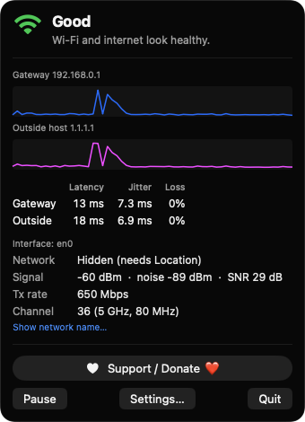
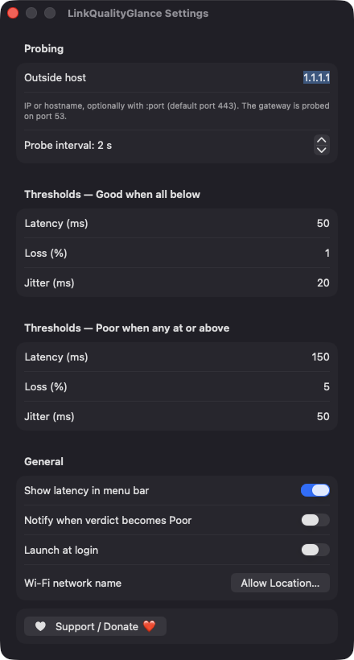
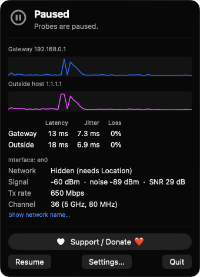

One verdict in the menu bar
The Wi-Fi glyph turns green, orange or red for Good, Check or Poor, with an optional average latency readout beside it.
Open source · macOS 14+ · Universal binary · System Monitoring
A colored Wi-Fi glyph in your menu bar gives a Good, Check or Poor verdict from gateway and outside-host latency, jitter and loss. Click it for details, press ⌘, to tune thresholds.
Free & MIT licensed · Apple Silicon & Intel · Latest release

Features
Everything is measured on your Mac and condensed into a verdict you can read in a second.
The Wi-Fi glyph turns green, orange or red for Good, Check or Poor, with an optional average latency readout beside it.
Probes your router and a host you choose (default 1.1.1.1) every 1 to 10 seconds. The explanation tells local Wi-Fi trouble from problems on your provider's side.
See latency, jitter and packet loss over a rolling 60-sample window for each target, with sparklines in the popover.
Read signal, noise, SNR, transmit rate and channel with band and width through CoreWLAN. Weak signal is flagged in the explanation.
Edit the latency, loss and jitter limits for Good and Poor, choose the probe interval and outside host, and enable launch at login.
Turn on a notification when the verdict becomes Poor. A 5 minute cooldown keeps it from repeating, and probes pause during sleep to avoid false loss.
Screenshots


Install
LinkQualityGlance is open source and not notarized with a paid Apple Developer ID, so macOS needs one extra step the first time.
xattr -cr /Applications/LinkQualityGlance.app
Download
Free, forever. Built for macOS 14 Sonoma or newer, Apple Silicon and Intel.
Not notarized: on first launch right-click LinkQualityGlance.app → Open.
FAQ
Yes. It is released under the MIT license, has no accounts, servers or analytics, and the full source is on GitHub. If it helps you, there is an optional Support button that opens Ko-fi.
None for the verdict itself. Location is optional and only lets macOS reveal your Wi-Fi network name your location is never read or stored. Notifications and launch at login are requested only if you enable them, and it never asks for Accessibility, Screen Recording or Microphone.
Your settings are saved locally in the app's preferences on your Mac. The only network traffic is small TCP connection probes to your gateway and the outside host you configure nothing is sent to any server of ours.
Notarization requires a paid Apple Developer account, which this free project does not have. Right-click the app and choose Open once to approve it, or build it from source with Xcode.
Yes. LinkQualityGlance was generated by Claude Code from a written spec as a clean-room reimplementation, with no code or assets from any commercial app. The full source is on GitHub under MIT, so you can read every line before you run it. It has had less human review than a hand-written app, so bug reports are welcome.
Support ❤️
LinkQualityGlance is a free, open-source alternative to paid utilities. If it earns a spot on your Mac, a coffee keeps the updates coming.
☕ Support Or on Ko-fi